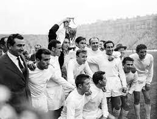
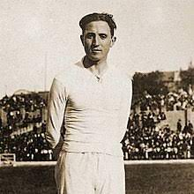

Histoire

1951-1960
Cette décennie a été brillante. Une pléiade de joueurs, emmenée par Alfredo Di Stefano, ont situé le Real Madrid
au
sommet du football. L’équipe des cinq Coupes d’Europe consécutives a ébloui le monde par son jeu spectaculaire.
Un
flux sans fin de succès légitimait le club comme le plus couronné d’Europe. Il fut proclamé le ‘Roi des Rois’ et
si
cela n’était pas assez, il remportait une Coupe Intercontinentale pour sa première édition (1960)..

1961-1970
L’équipe était dans une phase de reconstruction. En Espagne, elle était très supérieure, remportant huit
championnats de Liga, cinq d’entre eux consécutifs et un doublé Liga-Coupe. Hors de nos frontières, elle a
ramené
la
sixième Coupe d’Europe, remportée par le Real Madrid des ‘ye-yé’.

1971-1980
La décennie durant laquelle l’équipe remportait son sixième championnat de Liga était également marquée par la
mort
de Santiago Bernabéu. Le football est rentré en deuil le 2 juin 1978 pour rendre hommage au président qui a mis
le
Real Madrid au sommet. Luis de Calos remplaçait son ami et mentor. Il a dirigé l’institution merengue pendant
sept
ans. Dans ce laps de temps, il a incarné et transmis les valeurs de l’entité, ce qui lui a valu une
reconnaissance
au niveau mondial.

1981-1990
Une brillante génération de joueurs formés au club a illuminé les années 80. ‘La Quinta del Buitre’, emmenée par
Emilio Butragueño, a transformé le Real Madrid en l’une des meilleures équipes de l’histoire. Les buts d’Hugo
Sanchez ont également joué un rôle important dans cette décennie pleine de succès. Les Merengues ont conquis les
deux premières Coupes de l’UEFA et ont breveté les historiques remontés européennes et les nuits magiques du
Bernabéu.

2001-2010
Dans cette décennie le Real Madrid était de nouveau fier et triomphant sur le Vieux Continent. L’équipe merengue
levait sa neuvième Coupe d’Europe, sa troisième Intercontinentale et cinq Liga, entre autres. De plus,
Florentino
Pérez a assaini l’économie de l’institution en la convertissant en la plus riche de la planète.

2011-2020
Durant cette étape, le Real Madrid s'est de nouveau imposé au sommet du football mondial en remportant quatre
Coupes
d'Europe et quatre Mondial des Clubs. En 2014, les Madridistas remportaient la Décima, avec cette même année un
Mondial des Clubs. Les deux premières saisons de Zidane sur le banc ont elles été historiques, avec la Undécima
et
la Duodécima. De plus, 2017 a été une année de record avec pour la première fois la conquête de cinq titres: la
Coupe d'Europe, le Mondial des Clubs, la Liga et les Supercoupes d'Espagne et d'Europe. La Decimotercera est
enfin
arrivée en 2018, après un succès face à Liverpool à Kiev.
2021-2030
Le Real Madrid a écrit une nouvelle page de l'histoire du football en remportant en 2022 sa 14ème Coupe
d'Europe.
Notre équipe a agrandi son hégémonie dans la compétition face à Liverpool à Paris. Avant cela, les premiers
titres
de la décennie ont été la 12ème Supercoupe d'Espagne, remportée en finale contre l'Athletic à Riyad (Arabie
Saoudite) et la 35ème Liga, décrochée mathématiquement lors de la 34ème journée face à l'Espanyol au Santiago
Bernabéu.